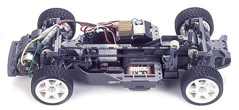

タミヤ TA-03F

引用元画像：タミヤ公式サイト・ファンサイト
📋 基本情報
| メーカー | タミヤ（Tamiya） |
|---|---|
| 機種名 | TA-03F |
| 型番 | 58182（Audi A4 STW）など |
| 発売時期 | 1996年〜1997年 |
| 生産状況 | 生産終了（ドリフトスペック版は2005年に限定再販） |
| カテゴリー | ラジコンカー（1/10スケール 電動RCカー） |
| サブカテゴリー | ツーリングカー（オンロード・ドリフト） |
📏 シャーシスペック
| ホイールベース | 257mm |
|---|---|
| フレーム | バスタブタイプ / FRPダブルデッキ（PRO版） |
⚙️ 駆動系
| 駆動方式 | ベルトドライブ4WD（シングルベルト） |
|---|---|
| デフギヤ | 前後ともボールデフ（PRO版標準装備） |
| モーター | 540タイプ |
| モーター位置 | フロントオーバーハング（前輪より前方） |
🔧 サスペンション
| 形式 | 4輪ダブルウィッシュボーン |
|---|---|
| ダンパー | オイルダンパー（4本） |
| スタビライザー | フロント・リヤ装備可能（PRO版標準装備） |
💡 特徴
タミヤ初のベルトドライブ4WDモデル
- タミヤ初のベルト駆動による4WDモデル（前後の駆動系の中継のみベルトを使用）
- フロントモーター配置により前後重量バランスを均等化
- 実車感あふれる挙動が特徴
ドリフト走行に最適な構造
- フロントモーター×ベルトドライブ4WDという独特のメカニズム
- 2000年代のドリフトブームで再評価された名機
- 2005年にドリフトスペック版として限定再生産
豊富なバリエーション
- TA-03F - 基本モデル（フロントモーター）
- TA-03F PRO - プロ仕様（FRPダブルデッキ、スタビ、ボールデフ標準装備）
- TA-03F PRO ドリフトスペック - 2005年限定再販モデル
- TA-03R - リヤモーター仕様
- TA-03R-S - リヤモーター・ショートホイールベース仕様
- TA-03F-S - フロントモーター・ショートホイールベース仕様
歴史的功績
- 1996年、1997年の全米選手権優勝（TA-03F PRO）
- デビッド・ジュン・スペシャルとして限定販売された記念モデルも存在
🔧 ぽすとそに工房での修理実績
修理難易度
★★★★★（非常に困難、パーツ入手が極めて困難）
⚠️ 難易度の変化について
かつての難易度：★★☆☆☆（比較的簡単）
発売当時〜2000年代は、パーツ供給も豊富で修理が比較的容易でした。
ドリフトブーム時の2005年再販により、一時的にパーツ供給が復活しました。
現在の難易度：★★★★★（非常に困難）
生産終了から20年以上が経過し、専用パーツの入手が極めて困難になっています。
特にベルト、ボールデフ、専用樹脂パーツなどの入手は、ほぼ不可能な状況です。
ドリフト愛好家の間で需要があるものの、パーツ不足により対応できないケースが増えています。
よくある故障・注意点
- ベルトの劣化・切断（経年劣化により弾性が失われやすい）
- ボールデフのボールとスプリングの摩耗（交換パーツ入手困難）
- フロントモーターマウントの樹脂パーツ破損（専用品の入手困難）
- 04モジュールギヤの摩耗（交換パーツほぼ入手不可）
- FRPシャーシの破損・クラック（PRO版、修復ほぼ不可能）
修理のポイント（パーツ入手可能な場合）
- ベルトは定期的に張力をチェック（劣化前に交換推奨）
- ボールデフは走行前後にグリス補充を徹底
- フロントモーターマウントは応力集中部を補強
- 一部のパーツはTA-02やTA-04用で代用可能（要確認）
- 重要パーツは予備を確保しておくことを強く推奨
歴史的価値と現状
- タミヤ初のベルトドライブ4WDという革新的なシャーシ
- ドリフト走行文化の発展に大きく貢献した名機
- フロントモーターレイアウトは後のドリフトカーに影響を与えた
- 現在はパーツ供給停止により、保存・展示用として扱われることが多い
- ドリフト愛好家の間で今なお人気が高く、中古市場でも希少価値が高い